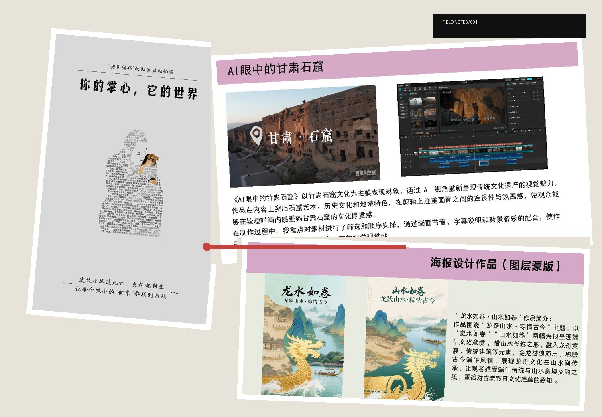
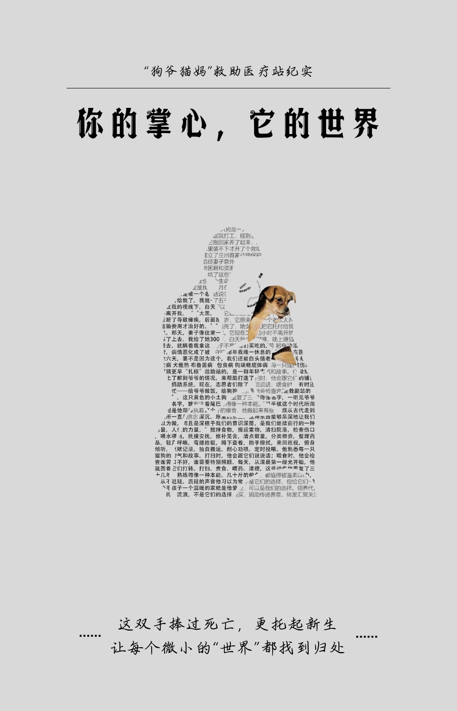

PORTFOLIO2026
SELECTED WORKSREPORT / EDIT / DESIGN
采访策划•叙事剪辑•公众号排版•海报设计•数据可视化•
采访策划•叙事剪辑•公众号排版•海报设计•数据可视化•
ISSUE 01
编辑部索引
FEATURE STORY / 深度报道
围墙内外
一篇关于流浪动物救助、社区矛盾与个人坚守的视觉化人物报道。

善意如何穿过围墙，进入公共生活？
报道从张明三十余年的动物救助经历出发，同时呈现志愿者、邻居、商铺与城市治理的不同声音。它不只讲述个人善举，也试图追问：当爱心进入公共空间，责任、边界与可持续性应如何被讨论。
“流浪动物需要帮助，但居民也需要正常的生活环境。”
- 报道角色采访、写作、摄影、版式设计
- 内容结构人物线 + 冲突线 + 公共议题
- 呈现方式公众号长图文 + 主题海报
VIDEO EDITING / 视频剪辑
让镜头承担叙事，
让镜头承担叙事，
让节奏推进信息。
剧情短片、文化类短视频、音乐 MV 与基础动效练习。点击卡片中央的播放按钮，可直接播放 MP4、打开云端播放器，或显示待补充提示。
VIDEO ARCHIVE
00 ITEMS
SELECTED WORKS / 精选作品
作品不是“结果”，
作品不是“结果”，
而是一次次编辑判断。
以下内容由数据文件自动生成。以后只需在 assets/data/projects.js 中增加一项，即可扩展作品。
EDITORIAL METHOD / 报道方法
从问题意识到发布复盘
新闻专业训练赋予作品的不只是形式，而是信息来源、叙事顺序和公共价值的判断。
- 01
找到问题
从生活现场、地方文化与公共议题中建立选题，明确作品要回答什么。
- 02
核实材料
整理采访、图片、数据与背景资料，区分事实、观点和推断。
- 03
建立叙事
用镜头、标题、版式和节奏安排信息层级，让观众知道先看什么。
- 04
发布复盘
根据平台、屏幕与受众调整比例、字幕、封面和加载方式。
ABOUT / 关于我
黄楠
西北民族大学 · 新闻学本科生
关注地方文化、人物故事与社会议题，擅长把文字、影像与视觉设计组合成适合屏幕阅读的内容。
擅长方向
剪辑节奏、短视频包装、纪录片剪辑、宣传片剪辑、调色与字幕设计。
常用工具
Premiere Pro / After Effects / Photoshop / Illustrator / Canva / 剪映。
公开联系方式
为保护隐私，公开网页默认不展示手机号。